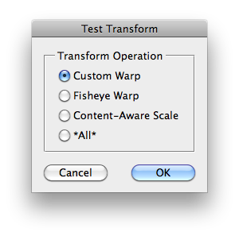

This script is part of the set of Test Scripts coming with the JSON Action Manager scripting library.
It shows how to transform layers, i.e., apply warp or content-aware scale:
Back to JSON Action Manager Test Scripts